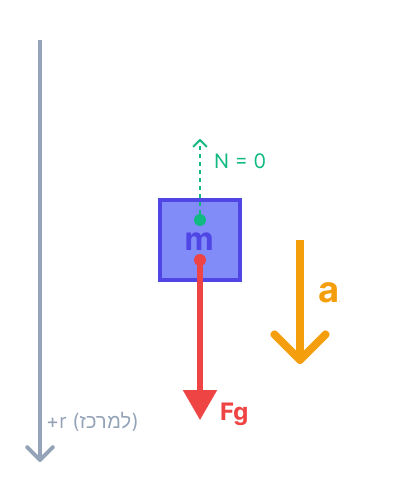

[תמונת השאלה המקורית]לא נמצאה תמונה בשם question-image.png באותה תיקייה.
סעיף א' (1) - שינוי האנרגיה הקינטית
מה נתון:
לוויין מנמיך טוס ממסלול מעגלי גבוה למסלול מעגלי נמוך יותר סביב כדור הארץ. המשמעות הפיזיקלית היא שרדיוס המסלול המעגלי של הלוויין, נסמן אותו ב-\(r\), קָטַן.
מה מחפשים:
מבקשים לקבוע האם האנרגיה הקינטית של הלוויין (\(E_k\)) גדלה, קטנה או לא השתנתה כתוצאה מירידת הרדיוס, ולנמק זאת.
רגע לפני שנקפוץ לחישובים, חשוב להבין את הסיפור מאחורי הקלעים: למה שלוויין ירד פתאום ממסלול גבוה למסלול נמוך? מעבר כזה אינו ספונטני. כדי שלוויין ינמיך למסלול מעגלי קרוב יותר, חייב לפעול עליו כוח שאינו משמר נגד כיוון התנועה שלו (למשל, חיכוך עם שרידי אטמוספירה דלילה או הפעלת מנועי בלימה).
כוח זה מבצע על הלוויין עבודה שלילית (\(W_{nc} < 0\)), ולכן האנרגיה המכנית הכוללת של המערכת אינה נשמרת, אלא קטנה עם הזמן.
⚠️ מלכודת נפוצה בבגרות:
אסור בשום אופן לנמק ש-"האנרגיה הפוטנציאלית קטנה בגלל הירידה בגובה, ולכן לפי חוק שימור אנרגיה, האנרגיה הקינטית בהכרח גדלה". מכיוון שהאנרגיה הכוללת לא נשמרת כאן, הנימוק הזה שגוי לחלוטין! הדרך היחידה לקבוע מה קרה לאנרגיה הקינטית היא להסתמך ישירות על נוסחת הכבידה לאנרגיה קינטית של לוויין במסלול מעגלי, כפי שנעשה כעת.
תרשים עזר למסלול הלוויין
הצבה ופתרון:
נבחן את הביטוי התלוי ברדיוס המסלול \(\displaystyle E_k = \frac{GMm}{2r}\). בביטוי זה, \(G\) הוא קבוע הכבידה, \(M\) מסת כדור הארץ, ו-\(m\) מסת הלוויין - כולם גדלים קבועים שאינם משתנים. המשתנה היחיד הוא רדיוס המסלול \(r\), אשר ממוקם במכנה השבר.
על פי כללי המתמטיקה, כאשר המכנה של שבר חיובי קָטַן (והמונה נשאר קבוע), הערך הכולל של השבר גָדֵל. מכיוון שהלוויין ירד למסלול נמוך יותר, משמע \(\downarrow r\), ניתן להסיק מיד כי \(\uparrow E_k\).
האנרגיה הקינטית של הלוויין גדלה.
הערת מורה:
חשבו על זה רגע בהיגיון: ככל שהלוויין קרוב יותר לכדור הארץ, כוח הכבידה המושך אותו חזק יותר. כדי שהוא לא ייפול פנימה אלא יישאר במסלול מעגלי, הוא חייב לנוע במהירות גבוהה יותר (כוח צנטריפטלי גדול יותר דורש מהירות גדולה יותר באותו רדיוס, ואף יותר מכך כשהרדיוס קטן). מהירות גדולה יותר פירושה אנרגיה קינטית רבה יותר!
סעיף א' (2) - שינוי האנרגיה הכוללת
מה נתון:
בהמשך לסעיף הקודם, רדיוס מסלול הלוויין \(r\) קטן.
מה מחפשים:
מבקשים לקבוע האם האנרגיה המכנית הכוללת של הלוויין (\(E\)) גדלה, קטנה או לא השתנתה, ולנמק.
שוב נתבונן בביטוי המתמטי. הפעם, נשים לב לסימן המינוס המופיע לפני השבר: \(\displaystyle E = -\frac{GMm}{2r}\).
כפי שראינו קודם, הביטוי \(\displaystyle \frac{GMm}{2r}\) (ללא המינוס) גדל כאשר הרדיוס \(r\) קטן. עם זאת, כאשר מוסיפים לו סימן מינוס, המשמעות היא שהמספר הופך להיות שלילי "גדול יותר" בערכו המוחלט, כלומר הוא נמצא עמוק יותר בצד השלילי של ציר המספרים.
מבחינה אלגברית, כאשר מספר הופך ליותר ויותר שלילי, ערכו מתמעט (למשל: \( -10 \) קטן יותר מ- \( -5 \)). לכן, האנרגיה הכוללת קטנה.
האנרגיה הכוללת של הלוויין קטנה.
הערת מורה:
זכרו שאנרגיה מכנית כוללת של גוף כבול (כמו לוויין הנע סביב כוכב לכת) היא תמיד שלילית. זהו "בור הפוטנציאל" שהוא נמצא בו. ירידה למסלול נמוך יותר לא קורית סתם כך; לרוב היא תוצאה של כוח חיכוך (כמו חלקיקי אוויר דלילים בשולי האטמוספירה) שעושה עבודה שלילית על הלוויין, ובכך "גונב" ממנו אנרגיה כוללת ומקטין אותה.
סעיף ב' (1) - מאזני קפיץ בזמן שיגור
מה נתון:
1. על פני כדור הארץ, כאשר הגוף במנוחה, מאזני הקפיץ מראים \(10\text{ N}\). (הגוף מונח על משטח המאזניים, ולכן הכוח שהם מפעילים עליו הוא כוח נורמלי, נסמן כ-\(N\). לפי החוק השלישי של ניוטון, זהו גם הכוח שהגוף מפעיל על המאזניים, וזוהי קריאתם).
2. תאוצת הכובד על פני הקרקע היא \(g = 10\text{ m/s}^2\). נחשב מיד את מסת הגוף: \(10 = m \cdot 10 \Rightarrow m = 1\text{ kg}\). המסה היא תכונה פנימית ואינה משתנה!
3. בזמן השיגור, תאוצת הלוויין מופנית כלפי מעלה וגודלה \(a = 40\text{ m/s}^2\).
מה מחפשים:
את קריאת המאזניים, כלומר את גודל הכוח הנורמלי \(N\) שמשטח המאזניים מפעיל על הגוף, בזמן שהלוויין מאיץ למעלה.
[תרשים כוחות גוף בתהליך שיגור]לא נמצאה תמונה בשם image-2.1.png באותה תיקייה.
הצבה ופתרון:
נבחר מערכת צירים שבה הכיוון החיובי (ציר \(y\)) מופנה כלפי מעלה. נרשום את משוואת הכוחות עבור הגוף על פי החוק השני של ניוטון:
\[\Sigma F_y = m a_y\]
\[N - mg = m \cdot a\]
נציב את הנתונים שמצאנו: \(m = 1\text{ kg}\), \(g = 10\text{ m/s}^2\) ותאוצת המערכת \(a = 40\text{ m/s}^2\):
\[N - 1 \cdot 10 = 1 \cdot 40\]
\[N - 10 = 40\]
נעביר אגפים ונמצא את הקריאה:
\[N = 50\text{ N}\]
המאזניים מראים בזמן השיגור \(50\text{ N}\).
הערת מורה:
זוהי תופעת ה"משקל היתר" (g-force חיובי) שאסטרונאוטים חווים בשיגור. בגלל שהרצפה (או במקרה זה, המאזניים) מאיצה אותם בכוח כלפי מעלה, בנוסף להתגברות על משיכת כדור הארץ, המאזניים מפעילים עליהם כוח גדול פי 5 ממשקלם הרגיל. המסה נשארת אותה מסה, אבל הכוח שהמאזניים חייבים להפעיל כדי להאיץ אותה - גדל משמעותית.
סעיף ב' (2) - מאזני קפיץ במסלול הלוויין
מה נתון:
כעת הלוויין נע במסלול מעגלי סביב כדור הארץ לאחר שמנועיו כובו. הוא נמצא בתנועה מעגלית. מסת הגוף עדיין \(m = 1\text{ kg}\).
מה מחפשים:
את קריאת המאזניים, \(N\), כאשר הלוויין נמצא במסלול.
נציין כי הלוויין (וכל מה שבתוכו) נמצא ב"נפילה חופשית" המתווה מסלול מעגלי בהשפעת כוח הכבידה העולמי המשמש ככוח צנטריפטלי. כלומר תאוצתו הרדיאלית היא \(a_R\).
תרשים כוחות (FBD) - גוף במסלול לווייני

[תרשים כוחות גוף במסלול לווייני]לא נמצאה תמונה בשם image-2.2.png באותה תיקייה.
הצבה ופתרון:
נבחר את ציר הרדיוס (\(r\)) ככיוון החיובי המצביע אל עבר מרכז כדור הארץ. הגוף נע במעגל ולכן מאיץ בתאוצה רדיאלית שנסמן כ-\(a_R\). הכוחות הפועלים עליו בציר זה הם כוח הכבידה המקומי (\(F_G\)) המופנה פנימה כיוון חיובי, והכוח הנורמלי שהמאזניים מפעילים (\(N\)) המופנה החוצה כלפי מעלה.
לפי החוק השני של ניוטון עבור הגוף:
\[\Sigma F_r = m a_R\]
\[F_G - N = m a_R\]
עם זאת, אנו יודעים שעבור הלוויין עצמו (ובעצם עבור כל עצם הנע חופשי במסלול זה), כוח הכבידה הוא הכוח היחיד המעניק לו את התאוצה הצנטריפטלית הנדרשת לתנועתו: \(F_G = m a_R\). נציב תובנה זו בחזרה אל משוואת הגוף שרשמנו:
\[(m a_R) - N = m a_R\]
נחסר \(m a_R\) משני האגפים ונקבל:
\[-N = 0 \Rightarrow N = 0\text{ N}\]
המאזניים יראו קריאה של \(0\text{ N}\).
הערת מורה:
שימו לב למלכודת נפוצה: ה"חוסר משקל" בחלל אינו נובע מכך שאין שם כבידה! (הרי הכבידה היא שמחזיקה את הלוויין במסלול שלא יעוף לחלל החיצון). חוסר המשקל המורגש נובע מכך שגם המאזניים, גם הלוויין וגם האסטרונאוט – כולם נופלים יחד באותה תאוצה אל עבר כדור הארץ, פשוט הם מתקדמים כל כך מהר אופקית שהם מפספסים אותו. כיוון שאין ביניהם דחיפה יחסית, המאזניים לא "נמעכים" ולא מודדים כוח, וקריאתם אפס.
סעיף ג' - זמן מחזור ותנועה יחסית
מה נתון:
הלוויין סובב במישור קו המשווה, באותו כיוון סיבוב של כדור הארץ סביב צירו. זמן המחזור של הלוויין הוא \(T_s = 12\text{ h}\) (שעות). זמן המחזור הידוע של כדור הארץ סביב צירו הוא \(T_E = 24\text{ h}\) (יממה אחת).
מה מחפשים:
את פרק הזמן, \(\Delta t\), שעובר בין כל שתי פגישות רצופות שבהן הלוויין נמצא בדיוק מעל אותה נקודת תצפית מסוימת על פני הקרקע.
מכיוון שהתנועה קצובה, המהירות הזוויתית הממוצעת שווה למהירות הזוויתית הרגעית (\(\bar{\omega} = \omega\)). לכן ניתן לרשום את הקשר כ- \(\Delta\theta = \omega \cdot \Delta t\). כאשר גופים נעים באותו כיוון, המפגש הבא יתרחש כשהגוף המהיר יותר יעבור בדיוק סיבוב אחד שלם יותר (זווית של \(2\pi\) רדיאנים) יחסית לגוף האיטי.
הצבה ופתרון:
נחשב תחילה את המהירות הזוויתית של כדור הארץ ושל הלוויין (נשאיר את היחידות ברדיאנים לשעה לנוחות):
אנו מחפשים את פרק הזמן \(\Delta t\) שבו ההפרש בין הזוויות (\(\Delta\theta\)) שעבר כל אחד מהם שווה לסיבוב שלם (\(2\pi\)):
\[\Delta\theta_s - \Delta\theta_E = 2\pi\]
נבודד את \(\Delta\theta\) מתוך הנוסחה שבדף (\(\Delta\theta = \omega \cdot \Delta t\)) ונציב עבור כל אחד מהגופים:
\[\omega_s \cdot \Delta t - \omega_E \cdot \Delta t = 2\pi\]
\[\left(\frac{\pi}{6} - \frac{\pi}{12}\right) \cdot \Delta t = 2\pi\]
נמצא מכנה משותף בסוגריים (\(6 \times 2 = 12\)):
\[\left(\frac{2\pi}{12} - \frac{\pi}{12}\right) \cdot \Delta t = 2\pi\]
\[\frac{\pi}{12} \cdot \Delta t = 2\pi\]
נצמצם ב-\(\pi\) את שני האגפים, ונכפיל ב-12 כדי לבודד את \(\Delta t\):
\[\frac{1}{12} \cdot \Delta t = 2 \Rightarrow \Delta t = 24\text{ h}\]
הלוויין עובר מעל נקודת התצפית כל \(24\) שעות.
הערת מורה:
ניתן לפתור סעיף זה גם באמצעות היגיון פשוט ומבריק ללא נוסחאות מתקדמות: ב-24 שעות, נקודה על כדור הארץ משלימה בדיוק סיבוב אחד סביב הציר. באותו זמן בדיוק של 24 שעות, הלוויין שזמן המחזור שלו הוא 12 שעות, ישלים בדיוק שני סיבובים שלמים. כיוון ששניהם התחילו מאותה נקודה וסיימו מספר שלם של סיבובים אחרי יממה, הם ייפגשו שוב בדיוק באותו מקום כעבור 24 שעות. משל למרוץ, האצן המהיר "מקיף" את האצן האיטי בעקיפה שלמה.
נוסח השאלה המקורית
[תמונת השאלה המקורית]לא נמצאה תמונה בשם question-image.png.